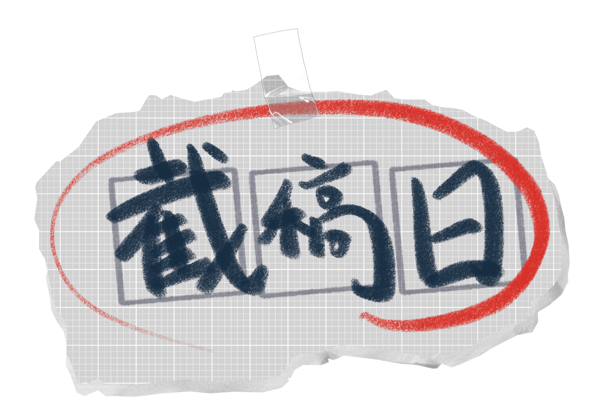

|

故事大綱
你們是一個設計團隊，為了工作方便，大家一起合租了一間公寓。
這次你們接到了一個加急的大案子，甲方表示：「時間緊急，能做多少做多少，最後作業量最高的，我們會再多給一些委託費」。
每個人都像是被解放的野獸，拼命地做著自己的工作，但競爭實在是太激烈了，沒有人能拉開作業量的差距，所以你轉念一想...如果別人的進度比自己低
那自己不就是完成度最高的那個人嗎?!
然而團隊的成員似乎也想到了這件事......；於是這場沒有硝煙的戰爭，在一個平凡的早晨默默開場。
基本介紹
遊戲流程
|
時程規劃


組長/音樂：劉紹威 背景：潘雨佳 按鍵/介面：柳繼荏 程式：鄭書恩、馮玄豔